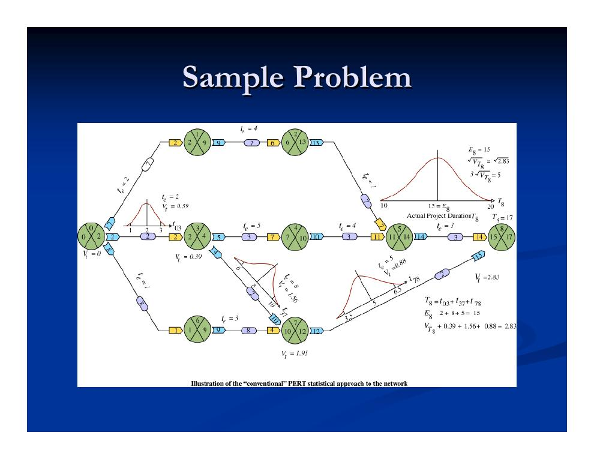
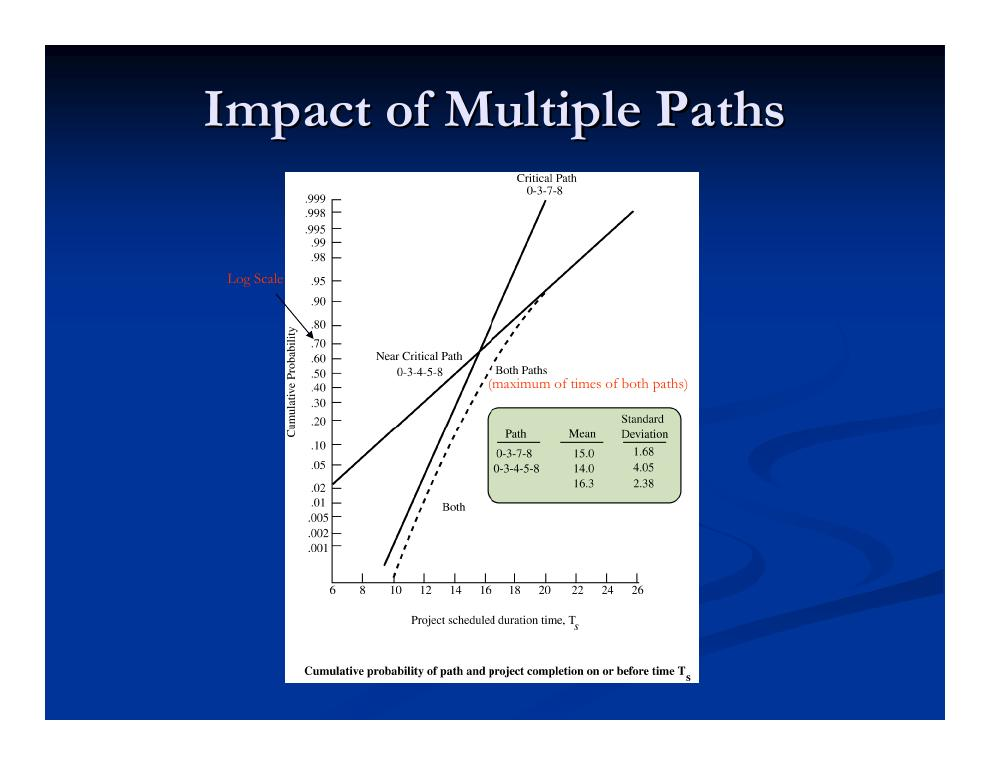
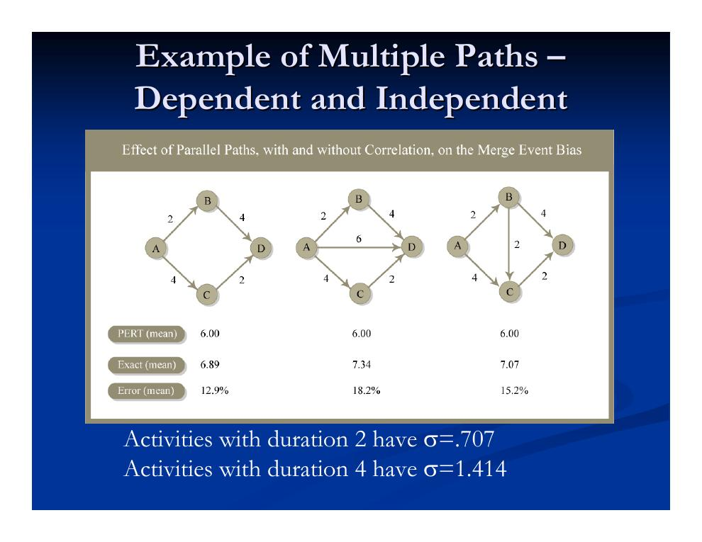
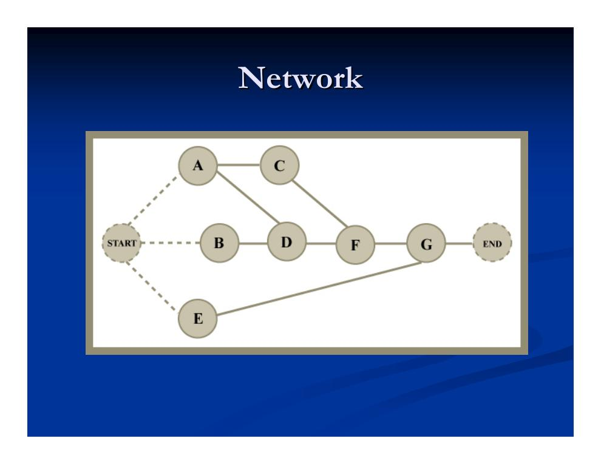
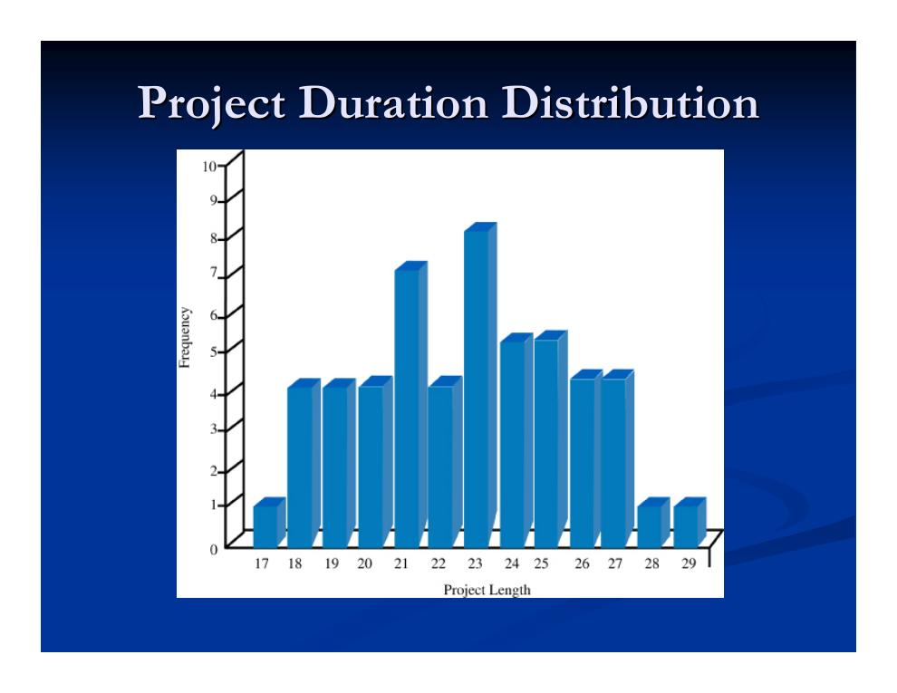

- PERT im Rückblick: das Handwerkszeug aus Kapitel 4.2
- Die Sammelknoten-Verzerrung (Merge Node Bias)
- Der naive Mehrpfad-Ansatz – und warum auch er scheitert
- Das PNet-Verfahren und die Grenzen von PERT
- Monte-Carlo-Simulation: Prinzip, Ablauf und Beispiel
- Der Kritikalitätsindex
- Wie viele Simulationsläufe braucht man?
- Ausblick: dynamische Prozesssimulation
PERT im Rückblick: das Handwerkszeug aus Kapitel 4.2
Dieses Kapitel setzt die probabilistische Terminplanung fort. Die Grundlagen von PERT wurden in Kapitel 4.2 eingeführt; hier die Eckpunkte in Kurzform, weil das Folgende unmittelbar darauf aufbaut:
- Jede Vorgangsdauer wird als betaverteilt angenommen und aus der Drei-Zeiten-Schätzung (a, m, b) abgeleitet: erwartete Dauer d̄ = (a + 4m + b)/6, Standardabweichung s = (b − a)/6.
- Die Projektdauer gilt als näherungsweise normalverteilt (zentraler Grenzwertsatz) mit Erwartungswert Te aus der gewöhnlichen CPM-Rechnung und Varianz S² als Summe der Varianzen der Vorgänge auf dem kritischen Pfad – unter der Annahme unabhängiger Vorgangsdauern.
- Im Beispielprojekt aus Kapitel 4.2 (Vorgänge A–G, kritischer Pfad C–E–G) ergab sich Te = 11, S = 0,7817 und z. B. P(T ≤ 10) ≈ 10 %.
Alle diese Rechnungen betrachten ausschließlich einen Pfad – den kritischen. Genau hier liegt das Problem, dem sich dieses Kapitel widmet.
Die Sammelknoten-Verzerrung (Merge Node Bias)
Es ist irreführend, für jeden Knoten des kritischen Pfads nur die Varianz eines einzigen Vorgängers zu berücksichtigen. Denn der früheste Start eines Knotens hängt vom Maximum der End- (bzw. Start-)zeitpunkte aller Vorgänger ab – auch der nicht kritischen. Formal ist der früheste Start eine Zufallsvariable, die das Maximum mehrerer (nicht unabhängig identisch verteilter) Zufallsvariablen ist. Diese Sammelknoten-Verzerrung (Merge Node Bias) fällt umso stärker aus, je …
- mehr Vorgänger in einem Knoten zusammenlaufen,
- ähnlicher die Termine der Vorgänger liegen (nahezu gleichzeitige Fertigstellung) und
- unabhängiger die Vorgänger voneinander sind.
Ein Minimalbeispiel aus der Vorlesung: Vorgang C hat zwei Vorgänger A und B. Der Endtermin von A ist normalverteilt mit N(10; 1), der von B mit N(9; 3). PERT würde nur den kritischen Vorgänger A ansetzen und für den Start von C den Erwartungswert 10 mit Standardabweichung 1 ausweisen. Tatsächlich gilt aber ES(C) = max(EF(A), EF(B)) – und dieses Maximum hat den Erwartungswert µ = 10,777 bei σ = 1,55. Der Start verschiebt sich also im Mittel spürbar nach hinten, und die Streuung wächst.
Dass die Verzerrung praktisch relevant ist, zeigt das folgende Beispielnetz in Vorgangspfeil-Darstellung mit einem kritischen und einem beinahe kritischen Pfad:

Die abgeleiteten Kennwerte beider Pfade – der kritische Pfad 0–3–7–8 und der beinahe kritische Pfad 0–3–4–5–8 – im Vergleich:
| Vorgang | Zeitschätzungen | Pfad 0–3–7–8 (kritisch) | Pfad 0–3–4–5–8 | ||||
|---|---|---|---|---|---|---|---|
| a | m | b | Mittelwert | Varianz | Mittelwert | Varianz | |
| 0–3 | 1 | 2 | 3 | 2 | 0,39 | 2 | 0,39 |
| 3–7 | 6 | 8 | 10 | 8 | 1,56 | – | – |
| 7–8 | 3,5 | 5 | 6,5 | 5 | 0,88 | – | – |
| 3–4 | 1 | 4 | 13 | – | – | 5 | 14,06 |
| 4–5 | 2 | 4 | 6 | – | – | 4 | 1,56 |
| 5–8 | 2 | 3 | 4 | – | – | 3 | 0,39 |
| Summe | 15,0 | 2,83 | 14,0 | 16,40 | |||
| Standardabweichung | 1,68 | 4,05 | |||||
Mittelwert und Varianz eines Pfads sind einfach die Summen der Mittelwerte und Varianzen seiner Vorgänge; die Standardabweichung ist die Wurzel der Pfadvarianz. Der zweite Pfad ist im Mittel nur einen Tag kürzer, streut aber wegen des Vorgangs 3–4 (a = 1, b = 13!) enorm. Das Projekt ist erst fertig, wenn beide Pfade fertig sind – die tatsächliche Projektdauer ist das Maximum beider Pfaddauern:

Der naive Mehrpfad-Ansatz – und warum auch er scheitert
Ein naheliegender Korrekturversuch: Statt nur den kritischen Pfad zu betrachten, berücksichtigt man die Varianz aller Pfade, die in einen Sammelknoten münden, und nimmt an, dass die Unterschreitungswahrscheinlichkeit des Knotens das Produkt der Wahrscheinlichkeiten aller Pfade ist:
Angewendet auf das PERT-Beispiel aus Kapitel 4.2 (Frage: Wahrscheinlichkeit, vor Tag 10 fertig zu sein): Neben dem kritischen Pfad C–E–G führen auch die Pfade A–D–G und B–G zum Endknoten. Für jeden Pfad rechnet man wie gewohnt:
S² = V[A] + V[D] + V[G] = 0,25 + 0,25 + 0,11 = 0,6111 ⇒ S = 0,7817
P(T ≤ 10) = P( z ≤ (10 − 7)/0,7817 ) = P( z ≤ 3,8378 ) = 0,9999
S² = V[B] + V[G] = 0,1111 + 0,1111 = 0,2222 ⇒ S = 0,4714
P(T ≤ 10) = P( z ≤ (10 − 8)/0,4714 ) = P( z ≤ 4,2429 ) = 0,9999
Pc(T ≤ 10) = P(TCEG ≤ 10) × P(TADG ≤ 10) × P(TBG ≤ 10)
= 0,1003 × 0,9999 × 0,9999 = 0,1003 ≈ 10 %
Damit das Projekt in 10 Tagen endet, müssen tatsächlich alle drei Pfade in 10 Tagen fertig sein. Aber: Die Produktformel unterstellt, dass die Pfaddauern unabhängig sind – und das kann nicht stimmen, sobald sich Pfade Vorgänge teilen (hier hängt der Vorgang G in allen drei Pfaden). Wie stark Abhängigkeit und Netzstruktur das Ergebnis verfälschen, zeigt der folgende systematische Vergleich:

Das PNet-Verfahren und die Grenzen von PERT
Als Auswege aus der Sammelknoten-Verzerrung nennt die Vorlesung zwei Verfahren: PNet und die Monte-Carlo-Simulation. PNet verfeinert den naiven Mehrpfad-Ansatz, indem stark korrelierte (also nicht annähernd unabhängige) Pfade aussortiert werden:
- Alle Pfade P aufzählen, deren Dauer einen Mindestanteil der kritischen Pfaddauer erreicht: Dur(P) > α · Dur(kritischer Pfad).
- Die Pfade nach absteigender Dauer ordnen (bei Gleichstand: nach absteigender naiv geschätzter Varianz).
- Den linearen Korrelationskoeffizienten zwischen den Pfaden berechnen.
- Die Pfade der Reihe nach aufnehmen – und jeden Pfad streichen, dessen Korrelationskoeffizient mit einem bereits aufgenommenen Pfad größer als 0,5 ist.
Zusammengefasst leidet PERT – trotz seiner analytischen Eleganz – an vier grundsätzlichen Schwächen:
- Gültigkeit der Beta-Verteilung für Vorgangsdauern ist eine Annahme, keine Gewissheit.
- Gültigkeit des zentralen Grenzwertsatzes für die Projektdauer ist fraglich – die Vorgangsdauern sind in Wirklichkeit nicht unabhängig.
- Es wird nur der kritische Pfad betrachtet: Die Projektdauer ist eben nicht bloß eine Summe von Zufallsvariablen, sondern enthält an Sammelknoten Maxima – das führt zu Überoptimismus und unterschätzter Dauer.
- Die Drei-Zeiten-Schätzung für jeden Vorgang ist aufwendig zu erheben.
Monte-Carlo-Simulation: Prinzip, Ablauf und Beispiel
Die Monte-Carlo-Simulation ersetzt die analytische Lösung durch rohe Rechenleistung: Man muss das Modell nicht mehr vereinfachen, um es geschlossen lösen zu können, und es sind keinerlei Annahmen über die funktionale Form der Vorgangs- oder Projektdauerverteilungen nötig. Für die Terminplanung wurde der Ansatz von Van Slyke (1963) eingeführt, gezielt zur Lösung des Sammelknoten-Problems in PERT. Als Nebenprodukt liefert die Simulation den Kritikalitätsindex jedes Vorgangs (Abschnitt 6). Erforderlich sind Hunderte bis Tausende von Simulationsläufen.
Der Ablauf:
- Verteilungen festlegen: für jede Vorgangsdauer eine Verteilung wählen – ohne Formvorgabe; auch gemeinsame Verteilungen mehrerer Vorgänge (zur Abbildung von Abhängigkeiten) sind möglich.
- Iterieren: In jedem „Lauf“ (jeder „Realisierung“) wird aus jeder Verteilung eine zufällige Dauer gezogen, dann werden kritischer Pfad und Projektdauer mit dem gewöhnlichen CPM-Algorithmus bestimmt und die Ergebnisse aufgezeichnet.
- Auswerten: die empirische Verteilung der Projektdauer sowie je Vorgang der Kritikalitätsindex (Anteil der Läufe, in denen der Vorgang kritisch war).

Die Eingangsdaten der sieben Vorgänge (Drei-Zeiten-Schätzung wie bei PERT, hier zur Kalibrierung der Verteilungen):
| Vorgang | Optimistisch a | Wahrscheinlichst m | Pessimistisch b | Erwartungswert d | Standardabw. s |
|---|---|---|---|---|---|
| A | 2 | 5 | 8 | 5 | 1,00 |
| B | 1 | 3 | 5 | 3 | 0,66 |
| C | 7 | 8 | 9 | 8 | 0,33 |
| D | 4 | 7 | 10 | 7 | 1,00 |
| E | 6 | 7 | 8 | 7 | 0,33 |
| F | 2 | 4 | 6 | 4 | 0,66 |
| G | 4 | 5 | 6 | 5 | 0,33 |
Die ersten zehn Simulationsläufe im Detail – man beachte, dass der kritische Pfad von Lauf zu Lauf wechselt:
| Lauf | A | B | C | D | E | F | G | Kritischer Pfad | Projektdauer |
|---|---|---|---|---|---|---|---|---|---|
| 1 | 6,3 | 2,2 | 8,8 | 6,6 | 7,6 | 5,7 | 4,6 | A–C–F–G | 25,4 |
| 2 | 2,1 | 1,8 | 7,4 | 8,0 | 6,6 | 2,7 | 4,6 | A–D–F–G | 17,4 |
| 3 | 7,8 | 4,9 | 8,8 | 7,0 | 6,7 | 5,0 | 4,9 | A–C–F–G | 26,5 |
| 4 | 5,3 | 2,3 | 8,9 | 9,5 | 6,2 | 4,8 | 5,4 | A–D–F–G | 25,0 |
| 5 | 4,5 | 2,6 | 7,6 | 7,2 | 7,2 | 5,3 | 5,6 | A–C–F–G | 23,0 |
| 6 | 7,1 | 0,4 | 7,2 | 5,8 | 6,1 | 2,8 | 5,2 | A–C–F–G | 22,3 |
| 7 | 5,2 | 4,7 | 8,9 | 6,6 | 7,3 | 4,6 | 5,5 | A–C–F–G | 24,2 |
| 8 | 6,2 | 4,4 | 8,9 | 4,0 | 6,7 | 3,0 | 4,0 | A–C–F–G | 22,1 |
| 9 | 2,7 | 1,1 | 7,4 | 5,9 | 7,9 | 2,9 | 5,9 | A–C–F–G | 18,9 |
| 10 | 4,0 | 3,6 | 8,3 | 4,3 | 7,1 | 3,1 | 4,3 | A–C–F–G | 19,7 |
Aus vielen solchen Läufen entsteht die empirische Verteilung der Projektdauer – ganz ohne Normalverteilungsannahme:

Wahrscheinlichkeitsaussagen liest man direkt als relative Häufigkeit ab:
Beispiel: P(X ≤ 20) = 13 / 50 = 26 %
Der Kritikalitätsindex
- Kritikalitätsindex (Criticality Index)
- Der Anteil der Simulationsläufe, in denen ein Vorgang auf dem kritischen Pfad lag. CPM und PERT kennen dagegen nur die binäre Aussage „kritisch“ (100 %) oder „nicht kritisch“ (0 %).
Der Kritikalitätsindex ist ein wertvolles Instrument, um den Aufwand für die Terminüberwachung und die Projektsteuerung zu priorisieren: Ein Vorgang, der in 80 % der Läufe kritisch ist, verdient deutlich mehr Aufmerksamkeit als einer, der es nur in 5 % der Läufe ist – selbst wenn beide im deterministischen Plan Puffer besitzen. Im Beispiel oben ist der Pfad A–C–F–G in 8 von 10 Läufen kritisch, A–D–F–G in 2 von 10: Der Kritikalitätsindex von C wäre auf dieser (kleinen) Basis 0,8, der von D 0,2 – und B sowie E waren nie kritisch.
Wie viele Simulationsläufe braucht man?
Für den Kritikalitätsindex p eines Vorgangs: Ursprünglich wurde sehr konservativ mit 10.000 Läufen gerechnet; empirische Untersuchungen zeigen, dass etwa 1.000 Läufe ausreichen. Die Genauigkeit lässt sich über ein Konfidenzintervall quantifizieren – das symmetrische Intervall um den Schätzwert p̂, das den wahren Wert p mit Wahrscheinlichkeit (1 − α) enthält:
( p̂ − zα/2 · √( p̂(1 − p̂)/n ) , p̂ + zα/2 · √( p̂(1 − p̂)/n ) )
Beispiel: Bei 95 % Konfidenz, 10 % ≤ p ≤ 90 % und 400 ≤ n ≤ 1.000 liegt p̂ mit 95 % Sicherheit innerhalb von 2–5 Prozentpunkten um p.
Für die mittlere Projektdauer µ: Hier braucht man eine Annahme über den Variationskoeffizienten σ/µ (Standardabweichung geteilt durch Mittelwert):
Für empirisch übliche Variationskoeffizienten (5–15 %): n = 400 ⇒ Schätzung innerhalb 0,5–1,5 % von µ; n = 1.000 ⇒ innerhalb 0,3–1 % von µ.
Für die Standardabweichung der Projektdauer:
n = 400 ⇒ σ̂ innerhalb 7 % des wahren σ; n = 1.000 ⇒ innerhalb 4,38 %.
Bilanz der Monte-Carlo-Simulation: Sie ist konzeptionell einfach (es wird der gewöhnliche CPM-Algorithmus verwendet, ohne Sonderannahmen über Verteilungsformen), liefert mit dem Kritikalitätsindex eine wertvolle Priorisierungshilfe und erlaubt skalierbare Genauigkeit. Dem stehen der hohe Rechenaufwand und die mitunter teure Schätzung der Dauerverteilungen gegenüber.
Ausblick: dynamische Prozesssimulation
Alle bisher betrachteten, CPM-basierten Verfahren – auch die Monte-Carlo-Simulation über CPM – nutzen eine einfache Repräsentation: Sie rechnen in einem Durchlauf ohne Iteration und bilden Unsicherheit nur in der Dauer ab. Wer stattdessen den Prozess selbst explizit modelliert, gewinnt mehr: Man kann über das Prozessdesign nachdenken, emergentes Verhalten erkennen (etwa dynamisch wandernde Engpässe) und manche Unsicherheiten einfacher schätzen. Wichtig ist dabei die Klarheit, ob ein Modell nur die Prozessebene oder auch die Projektebene abbildet.
Eine solche detaillierte Repräsentation lohnt sich besonders für:
- repetitive Prozesse, für die eine aggregierte Darstellung nicht sinnvoll ist – etwa wenn die Anzahl der Zyklen vorab unbekannt ist,
- Prozesse, in denen statische Planung nicht möglich ist: die Koordination vieler kurzer, zeitkritischer Interaktionen oder Fälle, in denen Terminunsicherheiten den Ablauf selbst verändern,
- Fälle, in denen sich einzelne Zeitkomponenten gut schätzen lassen, die aggregierte Statistik aber unbekannt ist.
Typische Beispiele repetitiver Bauprozesse: Erdbau, Tunnelvortrieb, Hotel-, Wohnungs- und Wohnheimbau, Straßen- und Brückenbau sowie Sanitär- und Verglasungsarbeiten im Hochhaus. Als Vorgeschmack diente in der Vorlesung ein Erdbau-Beispiel – ein Radlader belädt eine Flotte von n Lkw (Kapazität c, Beladezeit tl, Geschwindigkeit beladen sl und leer se, Entfernung zur Kippe d, Kippzeit vernachlässigt):
Naive Gesamtproduktivität: min( oRadlader , oLkw )